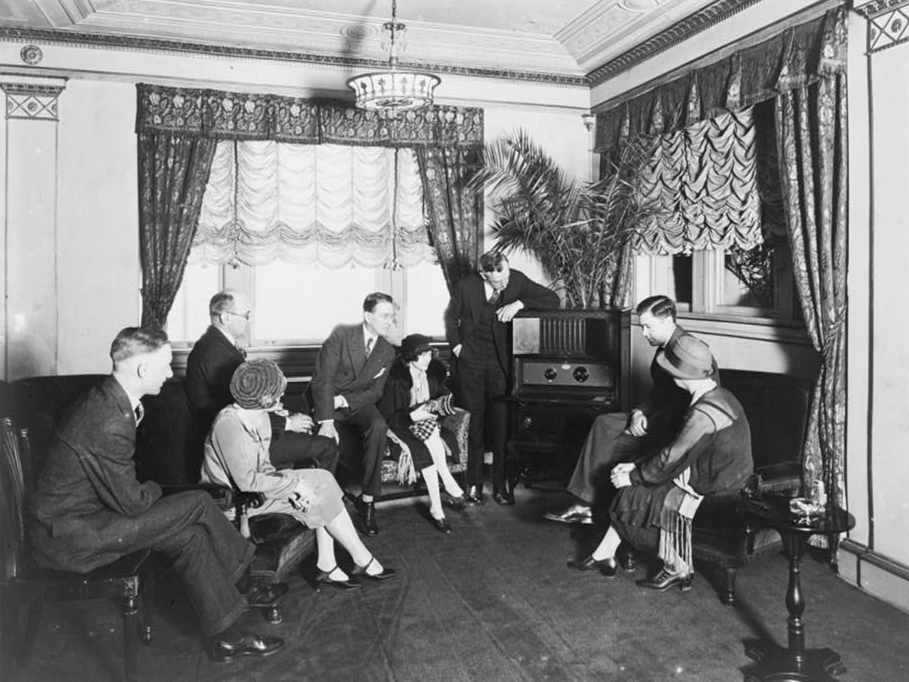
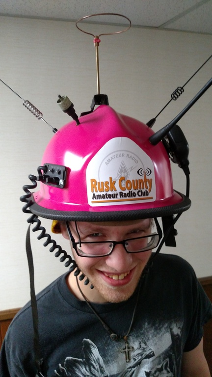

The Radio Hat
The Man-from-Mars technological wonder!
A Variety of Colors!
Lipstick Red
Tangerine
Flamingo
Canary Yellow
Chatreuese
Blush Pink
Rose Pink
Tan
The failure of technology is always a learning experience.
Back in the 20’s and 30’s when the radio hat was in its prime, not quite as a functioning product, but as a reinvention to continue learning about tech specifically for entertainment.
The culture surrounding technology was more for people who were creating it, not so much relying on it, because even though they had radio, they also relied heavily on published works like dictionaries, encyclopedias and newspapers.
This allowed for tech companies to not feel as pressured to put something out to the public, and to look more carefully and what needs to be changed for functionality purposes.
What's New?
As for technoculture now, phones are our number one source for everything.
New phone companies in particular compete with each other for loyalty from consumers, and they don’t focus just on functionality, but appearance. Which phone is the sleekest, which phone has the nicest screen with no noticeable bezels.
We also focus more on durability. Not only do we want our phones to be flashy and new, but we also want what we spent to be worth it. So we invest in cases, and tempered glass. The more reliant we are, the more changes that are made every year.
Radio: A family event

In the early 1900's, all the way until our current times, radio has been a part of the entertainment industry, but it is not as integrated into our society as it used to be.
In the early 1920’s until the late 1950’s, radio was the primary source of news, sports, and entertainment. Families made it an event for the kids to sit around the radio and catch the radio shows that would be performed, as well as listen to what’s going on locally.
Though, technology has grown exponentially since the 50’s, and radio has since pretty much fallen to music streaming and podcasting.
Past vs. Present
Our relationship with technology has only grown stronger with time. We have come to be more reliable on it for information.
Though in the past people were relying on the radio or the paper to learn about what was going on in the world, we have a lot more access and sources for entertainment, sports and news.
For young adults, as well as technologically savvy adults, we rely on streaming services such as spotify, apple music, and castbox rather than the radio. We even have technology to attach our phone to the speakers in our car, which renders the radio in the vehicle useless.

Though we have moved on to slimmer and sleeker designs, people still experiment with the designs of this hat in the present day.
It is fun to be able to think about how the hat would look if it was still here in the present day, without the technological advancements and minimalism.
Perhaps with the power of today’s technology, but the bulkiness and charm of the 30s’ aesthetic, we could manage to actually sell this to consumers.
In an alternate reality it wouldn’t be so goofy, but a staple summer cap.